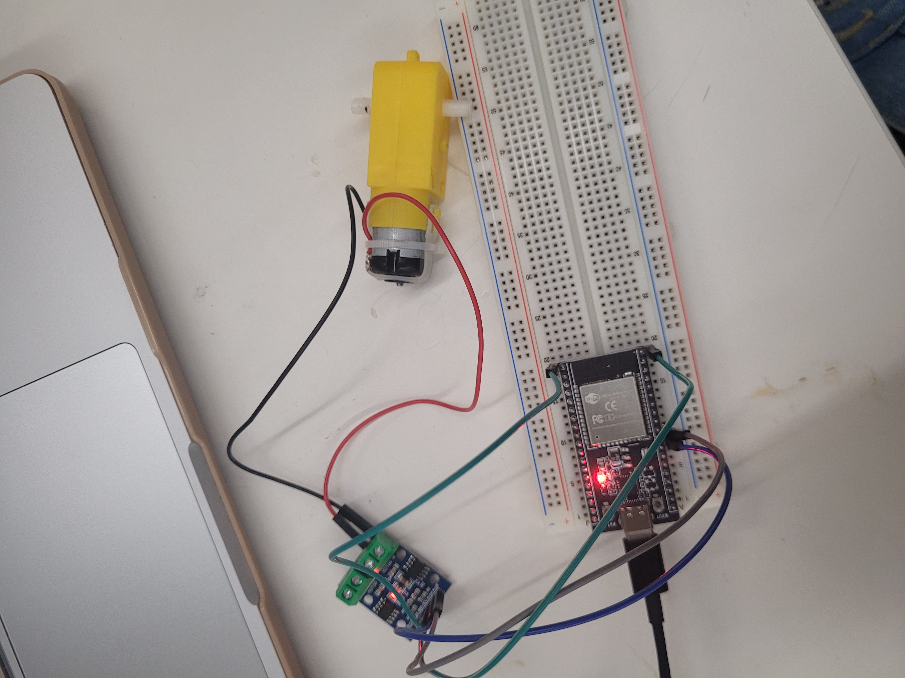

<div class="textcontainer">
<p class="margin"> </p>
<h1 class="bounce">Week 4: Microcontroller</h1>
<style>
.bounce {
font-size: 3em;
font-weight: bold;
color: #ff66b2;
text-align: center;
font-family: 'Comic Sans MS', cursive, sans-serif;
animation: bounce 1.5s infinite;
}
@keyframes bounce {
0%, 100% { transform: translateY(0); }
50% { transform: translateY(-10px); }
}
</style>
<p class = "margin"></p>
<div class="text-box">Fixing my kinetic sculpture!</div>
<style>
.text-box {
display: inline-block;
padding: 10px 15px;
border: 2px solid rgb(201, 74, 140);
border-radius: 5px;
background-color: rgb(243, 181, 218);
font-size: 16px;
font-weight: bold;
}
</style>
<br>
As you can see in the previous week, I realized that the motor actually spins the wheels way too fast. Without adding in additional gears to counteract this, I figured I could learn to program the speed that the motor spins at. Following Nathan's tutorials on the website, I was able to learn how to program the motor to spin slower and in a different direction so that the legs of the person move in the right direction.
<br>

<br>
<p class = "margin"></p>
<br>
I trouble-shooted for a long time with the code because I kept waiting for the motor to turn the opposite direction. Looking at the motor itself, I would see it changing directions. However, once placed into my kinetic sculpture, it just suddenly stopped moving. I kept trying to fix the code until I realized that the way I built my sculpture, the bike wheels simply don't move the other way. The axel on the right-most wheel has melted into the board leading to a malfunction in the turning process past a certain point. Hence, the code does work, it's just the physical sculpture doesn't support it!
<br>
<video autoplay loop muted playsinline style="width:30%; height:auto;">
<source src="vid1.mp4" type="video/mp4">
</video>
<br>
<video autoplay loop muted playsinline style="width:30%; height:auto;">
<source src="vid2.mp4" type="video/mp4">
</video>
<br>
<br>
</div>